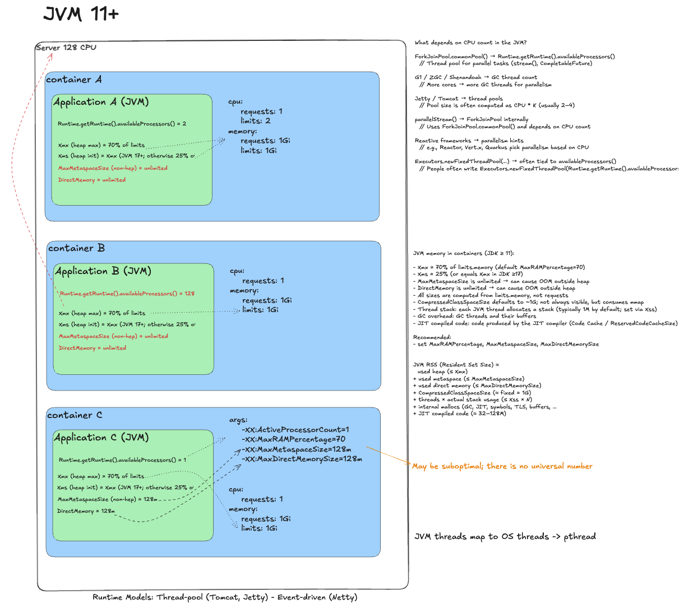
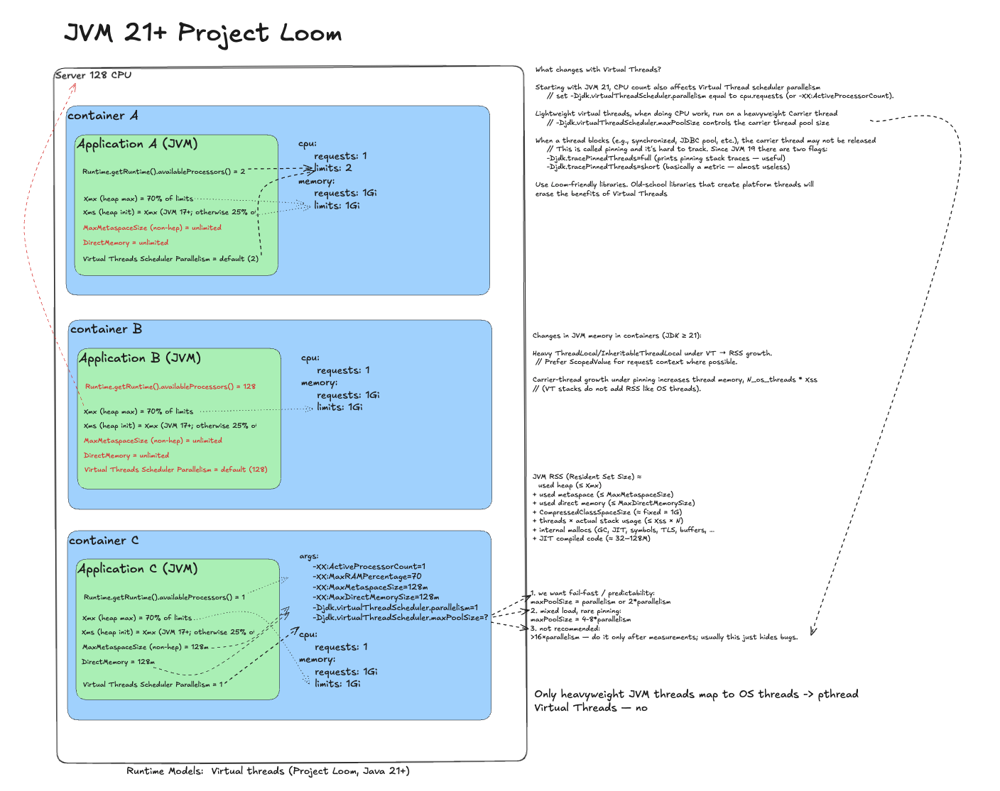
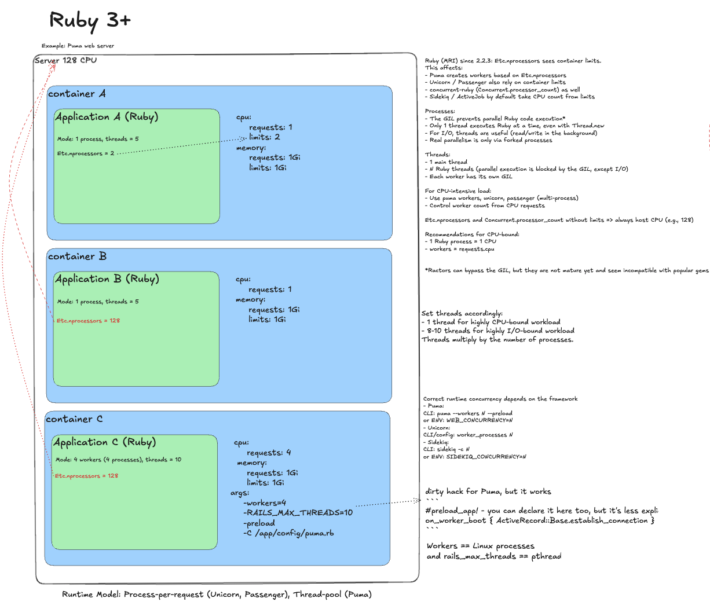
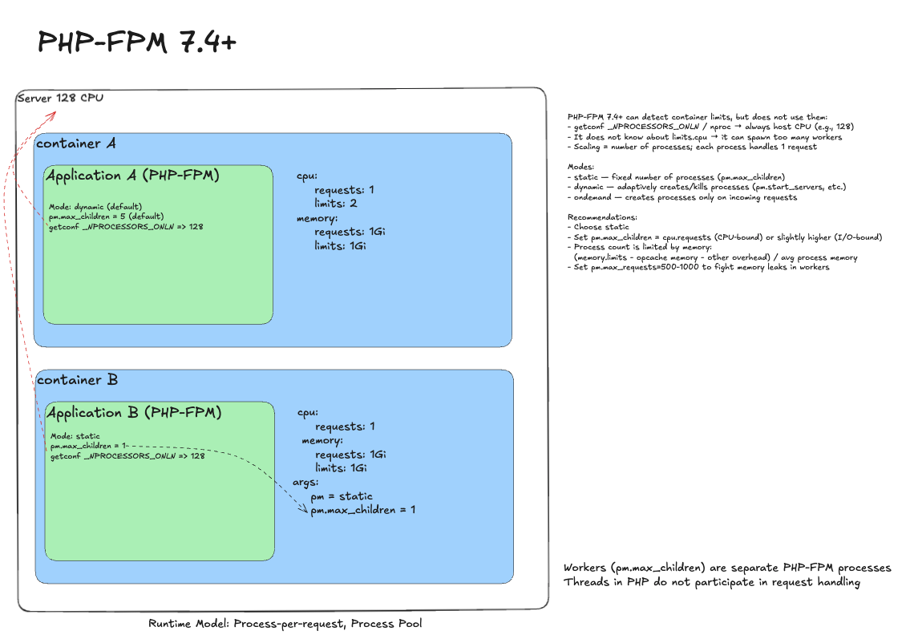

Ideal application deployment¶
The First Nine Guide. Block 4

So, we finally built the ideal web application:
- We reduced method complexity and function cost (block 1).
- We picked the right runtime model for the workload (block 2).
- We understood the internal architecture, which made the system resilient (block 3).
Now it's time to ship to production. And of course, into a container. Let's see what can go wrong. We'll also rate runtimes by how well they avoid traps on this path.
How we will do it: each runtime gets the same three container variants:
1) Naive - run as-is, no tuning. Typical problems show up.
2) Tuned - remove CPU limits (quota=0) and keep base resources: no CFS throttling, less jitter.
3) Ideal - aligned requests/parallelism with memory limits.
On the right of each diagram I show thread behavior, parallelism, and mapping to heavy OS threads.
Why remove CPU limits?
- Simplified: the kernel artificially slows the process (CFS throttling). Latency spikes and short bursts starve for CPU.
- What stays: cpu.requests (Kubernetes target share) plus memory.requests and memory.limits.
(There will be a dedicated post, but feel free to argue in the comments.)
When should limits stay?
When CPU usage is uncontrolled and can eat the whole node. Limits are justified for untrusted code or shared clusters. A no-limits approach requires over-provisioned cpu.requests and careful monitoring. Test before removing limits.
Java Virtual Machine 11+¶
I wrote about JVM tuning before; here is the short version.

Naive deployment
JVM sees a 2 CPU limit and sizes its parallelism accordingly: GC, ForkJoinPool, and web server pools (Tomcat). The problem may look like this: throttling during warm-up, latency spikes, off-heap leaks.
Remove throttling
In container B we remove limits. Trap: without limits JVM assumes the whole node. availableProcessors() becomes 128 and the runtime spawns a massive number of threads. Context switching explodes and performance degrades. The app tries to use 128 cores with a 1 CPU guarantee.
Ideal deployment
Remove limits, but tell JVM the real budget. Set -XX:ActiveProcessorCount=1 (equals requests). JVM aligns its internal parallelism and avoids thread explosion. Also tune memory (-XX:MaxRAMPercentage, -XX:MaxMetaspaceSize) to avoid OOM killer.
Java Virtual Machine 21+ (Virtual Threads)¶
Add a note on JVM with virtual threads.

Naive deployment
Same as JVM 11+: requests/limits and throttling. The virtual thread scheduler also sizes itself based on limits.
Remove throttling
Without limits the scheduler spawns too many heavy threads; virtual threads pile up.
Ideal deployment
Remove limits and do what we do in JVM 11+, plus one more flag:
- -XX:ActiveProcessorCount=1 - controls GC and ForkJoinPool parallelism.
- -Djdk.virtualThreadScheduler.parallelism=1 - sizes the heavy thread pool for virtual threads.
This aligns runtime parallelism with guaranteed resources.
Golang 1.10+¶

Naive deployment
Run with requests and limits. Go sees limits and runtime.NumCPU() returns 2. Issues: CPU throttling and GC not respecting container boundaries (OOMKill risk).
Remove throttling
Remove limits. Trap: Go now sees the whole machine, runtime.NumCPU() returns 128. The scheduler spawns 128 system threads. Performance degrades.
Ideal deployment
Set GOMAXPROCS=1 (from requests). Set GOMEMLIMIT to 70-90% of memory limit because Go ignores memory.limit. For automation, use automemlimit. The runtime respects container boundaries and behaves predictably.
Node.js 18+/20+¶

Naive deployment
Requests 1, limits 2. Node's main thread is single-threaded; libuv pool defaults to 4. Problems are minimal, except CPU throttling on CPU-bound workloads.
Remove throttling
Almost nothing happens. Node will not explode or try to use all cores. But you still do not get effective parallelism.
Ideal deployment
The right answer is scale-out. Keep process count aligned with requests. This yields predictable throughput and clarity.
Python 3.8+ (Gunicorn / Uvicorn)¶

Naive deployment
Python has the GIL, so execution is single-threaded. You can use multi-process pseudo-parallelism. Naive deployment is usually fine, but throttling can happen.
Remove throttling
Remove limits. Trap: C libraries (NumPy, Pandas, OpenCV) may see 128 cores and parallelize aggressively, creating resource contention.
Ideal deployment
- Gunicorn processes = requests.
- For risky libraries: OPENBLAS_NUM_THREADS=1 and similar limits.
- For long-lived workers: max-requests(+jitter), preload.
Ruby 3+¶

Naive deployment
Single-threaded MRI. Same throttling risks, but usually acceptable.
Remove throttling
Remove limits. Trap: Puma uses Etc.nprocessors. Without limits it sees all cores and may spawn too many processes or threads.
Ideal deployment
Set it explicitly:
- WEB_CONCURRENCY=1 (from requests) - worker processes.
- RAILS_MAX_THREADS=5 - thread pool size per worker (depends on workload).
- For Unicorn and Sidekiq, set worker/worker concurrency explicitly as well.
PHP-FPM 7.4+¶

Naive deployment
PHP-FPM runs in dynamic mode by default, creating and removing child processes as needed (process-per-request). Heavy apps hit limits and suffer. Dynamic mode (pm=dynamic) also causes memory spikes and unpredictability.
Remove throttling
Remove limits. PHP-FPM itself does not explode. Trap: if a library queries CPU via getconf _NPROCESSORS_ONLN, it will see all 128 cores.
Ideal deployment
- Process manager: pm = static.
- Worker count: pm.max_children = 1 (equals cpu.requests).
This yields stable and predictable behavior. PHP-FPM is harder to instrument due to its short-lived runtime, but Roadrunner or FrankenPHP can help.
.NET 6+¶

Naive deployment
.NET is container-aware: it sees a 2 CPU limit and sizes ThreadPool and GC accordingly. Throttling can still happen.
Remove throttling
Remove limits. Trap: .NET sees all host cores and inflates ThreadPool. You get a 1 CPU guarantee but plan for 128.
Ideal deployment
Tune runtime to requests:
- DOTNET_PROCESSOR_COUNT=1 - inherited by all pools.
- DOTNET_GCServer=true - server GC for predictable throughput (not always required, but reduces uncertainty).
I once tried to build a subjective runtime score table. Now I believe it is impossible to do objectively. So I dropped it and focus on traps and recommendations instead.
I will keep updating this article as a living cheat sheet. If you spot issues or gaps, leave comments.
Next: we finally define what a "heavy thread" is and how to live with it.
Previous: web server internals.
Follow the channel @r9yo11yp9e - we will keep chasing the nines.